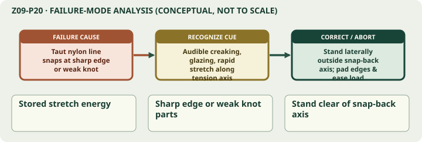

Z09-P20 · Tools and construction · New manuscript
Protect rope from chafing edges and snap-back recoil zones
Prevent sudden elastic rope snap-back injuries and edge cut-throughs during hauling or heavy tensioning.
When it applies · Any tensioned utility line, vehicle/equipment pull, bear-hang haul or storm-guyed camp line.
Equipment · Sound utility rope, edge pad (folded cloth/canvas) and clear exclusion zone along the line axis.

Actions
- Recognize that stretched nylon and synthetic ropes store massive elastic energy—if an anchor, knot or frayed section parts under heavy tension, the broken end whips straight back along the line axis at high speed.[K08, K09]
- Stand completely outside the line-of-fire recoil path (the snap-back bight and straight-line axis) and keep bystanders clear whenever tensioning heavy utility lines.[K08, K09]
- Pad rough rock edges, metal brackets and sharp bark corners where tensioned cord bends, and monitor for audible creaking or stretching fibers.[K09, K08]
Failure recognition · Standing directly behind a taut nylon haul line wrapped around a sharp metal bumper or rusty hook when the line parts.[K08, K09]
Verify · Confirm all personnel stand laterally clear of the tension axis, contact edges are smooth or padded and load stays modest for the cord class.[K08, K09, ED]
Stop or change course · Stop pulling immediately if a rope begins glazing, creaking, unlaying strands or cutting into an anchor—release tension slowly from a safe offset position.[K08, K09]
Evidence and editorial notes
- K08 · OSHA · Hand and Power Tools (OSHA 3080) (agency PDF)
- Section: Personal Protective Equipment and Work Area Control · Conditions: Cutting, splitting, striking and rigging operations
Support: Maintain stable footing, eye and hand protection appropriate to flying chips or snapped cordage, and clear bystanders outside the swing or snap-back zone.
Limitations: Field kits often lack shop PPE, requiring slower conservative technique and lower-energy methods. · Conflicting evidence: None; drives snap-back and work-circle exclusion zones in Z09.
Editorial note: Enforces conservative work circles and snap-back clearance. · Specialist reviewer: Tool safety and occupational safety
Primary source · checked 2026-11-24
Current assessment · A04-K08 (2026-11-25) · Open: support partial or missing (A04): Eye protection requirements are task-specific. Safe stance, glove choice and recoil envelope require each tool or rigging source. Limits: Specialist review PENDING (Tool safety and occupational safety); publication HOLD. All release decisions pending. - K09 · USDA Forest Service · Handtools for Trail Work (0523-2810-MTDC) (agency handbook)
- Section: Cordage, Anchors and Rigging Boundaries · Conditions: Non-life-safety camp lashing, tarps, haul lines and tie-downs
Support: Cordage strength drops significantly at knots, sharp bends, wet fibers, UV exposure and abrasion; inspect fibers before loading and never use unrated camp cord or improvised bindings for life-safety suspension or climbing.
Limitations: No universal breaking strength applies to natural plant fibers or weathered salvaged rope. · Conflicting evidence: Counters folklore claims equating improvised cordage to rated climbing rope.
Editorial note: Separates camp utility lashing/hauling from life-safety rigging. · Specialist reviewer: Rigging safety and materials mechanics
Primary source · checked 2026-11-24
Current assessment · W2C-E004 (2026-11-25) · Open: cited section not found in the source; escalated: Replacement support identified in FM 3-97.61 paras 4-1 to 4-3 (pages 4-1 to 4-3): sharp edges cut nylon rope under tension; leaving rope knotted or tightly stretched reduces strength and life over time; ultraviolet light deteriorates nylon; inspect before and after each use; select rope by task, type, diameter and tensile strength. Limits: No support found for the wet-fiber strength-loss part of K09. FM context is mountaineering rope, not camp cord.
Source lineage · OSHA 3080 and USFS rigging safety; new manuscript · Classification · New manuscript.